A Site Session must exist for an appointment to be booked. Site Sessions can be configured in 2 ways:
Once a Site Session exists Appointment Types can be booked into it. By default there is no limit to the number of times a given Appointment Type can be booked into a session.
This article:
The Booking Limits feature allows configuring limits for the number of times different appointment types can be booked into a Site Session. This means that once a given Appointment Type has been booked the allowed number of times into a session, according to the configured limits, appointment slots in this session will no longer be shown as available for this Appointment Type*
*As described later in this article, there are various ways an appointment can be booked. Once booking limits are reached for an Appointment Type in a Site Session, slot availability searches using the Slot Finder will not return any more results for that session.
To enable the feature:-
Now that the feature is enabled, let's create a Site Session for a clinician and consider the logic of configuring Booking Limits:
By default, no booking limit groups will be configured. A new limit group can be configured by clicking on the Add button, which will open the new Booking limit editing dialogue.
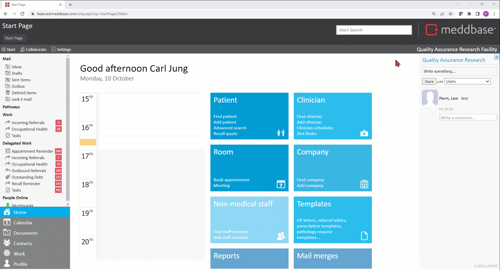
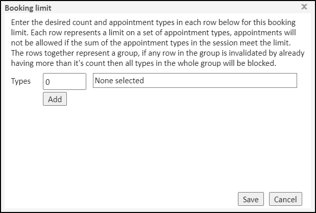
This dialogue window is where booking limits are configured. There are 2 main concepts to understand when configuring these limits:
1. Rows - A row is a single count of a set of appointment types. This is represented in the image above as a single row on the page.
The count must be a valid non-negative integer (0 or above) and you must select at least one appointment type for a row to be valid. Saving with any invalid configuration will cause a validation warning to be shown to the user explaining what validations failed on which rows
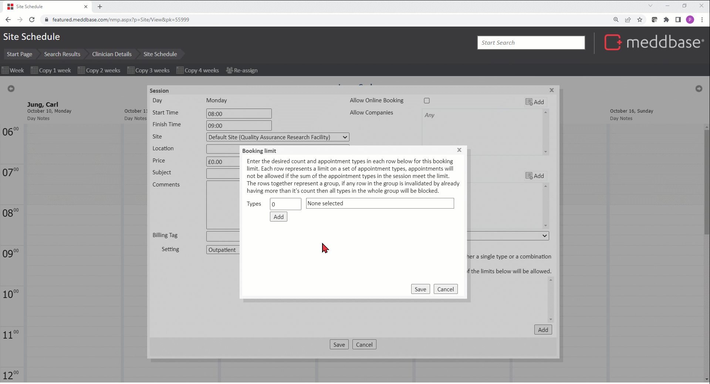
2. Groups - A group is a set of rows together, and is represented by the whole dialog window that appears as shown above. Every row in this window is part of the group. Rows in a group can be connected with 'And' to create complex booking limits, meaning that configuration in rows applies simultaneously,
i.e. configuration in the 1st row applies And configuration in the 2nd row applies And so on...
Using the appointments types from the previous example, let's add a Booking Limit group containing 2 rows, as shown below:
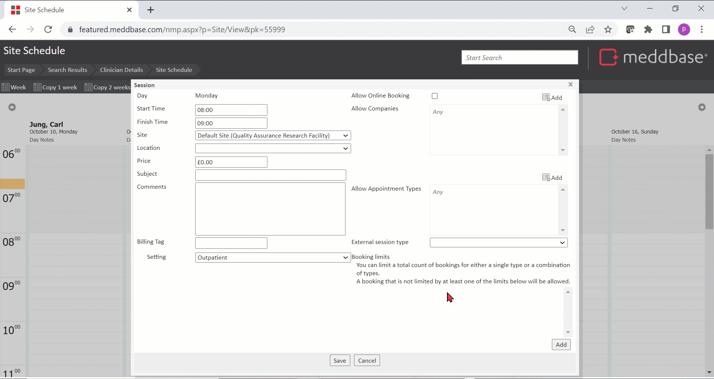
The above group allows for 2 maximum booking combinations in the session:
*The 2nd row in the group prevents the Medical Screen appointment type to be booked more than once in this session.
Groups can work together to create more complicated logic. Whilst Rows in a Group are connected with 'AND', i.e. 1st row configuration applies AND 2nd row configuration applies AND 3rd row etc., Groups can be connected with 'OR', i.e. 1st Group configuration applies OR 2nd Group configuration applies etc.
Once configured for the required site sessions the booking limits will come into play during bookings via the Slot Finder as well as bookings via Schedule. There are three workflows to book an appointment:
Furthermore:
4. It is possible to book an appointment with multiple clinician attendees, each with their own session and their own booking limits.
Booking limits come into effect for all these workflows, but they work differently depending on the workflow used to book the appointment and at what point in the booking process the booking limit is broken.
The patient portal allows the patient to self-book appointments. The patient selects which appointment they wish to book and will then be able to search for slots available for them to book into.
Booking limits will come into effect at the point the slot is being searched for. If a particular session has a booking limit configured and the appointment type being searched for has already reached it's booking limit then slots on this session will not be available for booking this appointment type.
This can only happen if the limit is broken before the slots are searched for, because between the point the slot is searched for and an appointment being booked into the slot the following can happen:
If the booking limit is broken at the point the appointment is being booked into the slot, an error will be returned to the patient informing them that the appointment is no longer available. The patient will be able to return to the slot finder, at which point the now unavailable slots will not be shown to the patient searching for availability again.
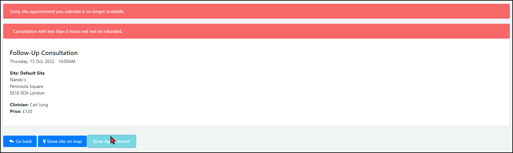
Meddbase Slot Finder feature allows users to search for available slots in the application to book appointments into.
Booking limits work here the same way as they do for the Patient Portal.
If a slot is no longer available due to a booking limit being reached, the slots will simply not appear in the slot availability search.
There is a possibility here also, that a booking limit is reached for an appointment type between searching for a slot and booking the appointment into that slot.
In this case the Meddbase user will receive a warning informing them that a booking limit has been reached, and they will be asked to confirm if they wish to continue with the booking.
The user can decide to continue with the booking and the appointment will be booked, ignoring the limit.
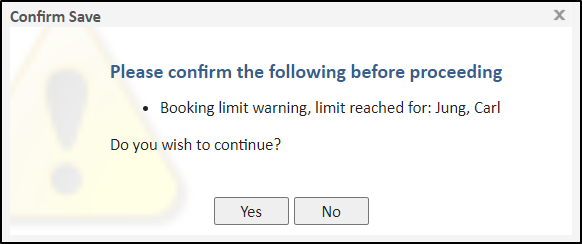
Meddbase Clinician Schedules feature shows multiple clinician's schedules in a side-by-side view allowing a time slot to directly be selected and then a patient and appointment type can be selected to book directly into that time slot.
There is no "slot finding" as such done here, there is no point at which a slot would be "hidden" if it were to break a booking limit.
When a booking limit is broken during the process of booking an appointment via Clinician Schedules, the Meddbase user will be alerted at the point of confirming the booking .
If at this point this appointment booking would break a booking limit within any of the selected clinician's sessions, then the user will receive a warning informing them that a booking limit has been reached, and they will be asked to confirm if they wish to continue with the booking.
The user can decide to continue with the booking and the appointment will be booked, ignoring the limit.
In Meddbase it is possible to book an appointment containing multiple clinicians. Booking limits works with this in mind and will always check ALL of the clinician's sessions that are attending the appointment.
If any of the clinicians' sessions have reached their respective booking limits for the appointment type being booked, the system will either:
*In the event of multiple clinicians triggering the booking limit at the same time, the warning provided to the user will list all clinicians who's sessions broke a booking limit. This means that different booking limit configurations across different sessions can come into play within a single appointment booking.
Meddbase allows creating Modules where multiple attendees are required to attend, based on Role or Specialism. Each of the clinicians attending the module could therefore have their own session with its separate Booking Limits.
To understand how these limits would interact consider the following configuration:
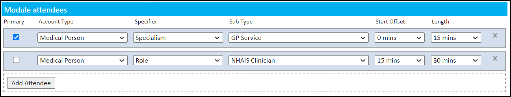
Using the Slot Finder, let's book appointment type X and add module M. The Slot Finder will only show slots for the primary attendee but only those where the other conditions of module M have been met, i.e. either Clinician B or C is also available
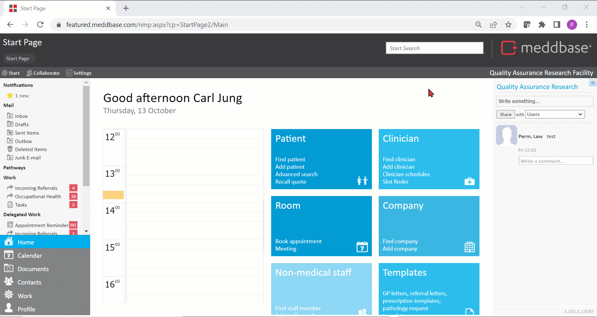
If either clinician B or C had already reached their Booking Limit on their respective session for appointment X, the Slot Finder would automatically consider the other clinician as available to attend module M, whilst still only displaying slots for the primary attendee - clinician A.
There are other characteristics and behaviours of the Booking Limits feature in Meddbase that are important for users to be aware of.
If the Booking Limits feature gets disabled, by unticking the Booking limits checkbox under Admin > Configuration > System feature > Booking limits, the ability to create new limits is removed, however on sessions where limits still exist, they will continue to apply regardless of the feature being switched off.
When a user attempts to disable the feature they are presented with a pop-up notification explaining that existing limits will still apply, and also that they can still be viewed and removed, as shown below:
The sessions themselves now have an interesting property of showing and allowing removal of booking limits, but no other changes.
When the feature is disabled and you navigate to a session that has no booking limits, the entire Booking limits section will not be visible.
However if the feature is disabled but the session does have booking limits, the limits will be visible with some notable changes:
You can see an example of this here where a group exists with a delete button, but there is no Add as the section is essentially view / remove only:
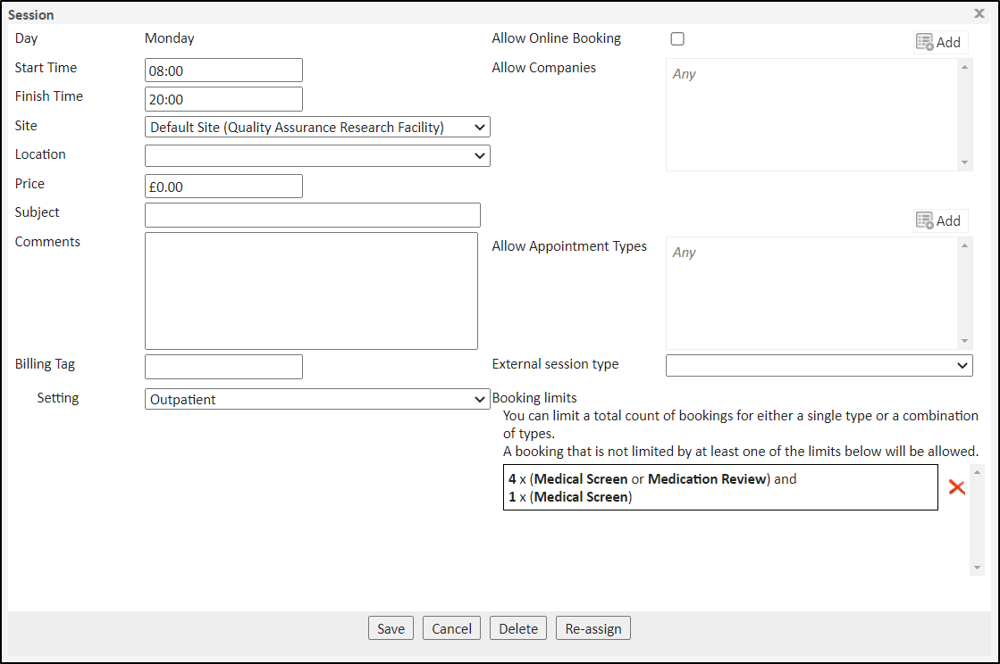
Meddbase allows multiple sessions to be created in parallel to each other for the same user, site or location.
When Booking Limits are in use and a session reaches its booking limit for an appointment type, that session, for its entire duration, becomes a blocker for that appointment type, regardless of any other, parallel sessions and their limits.
This means that if 2 sessions overlap and one session reached its booking limit for a given appointment type, it will also stop slots from appearing for that appointment type on the other session for the time where both sessions overlap.
Consider the below example of 2 sessions configured for the same user at the same site and location, as follows:
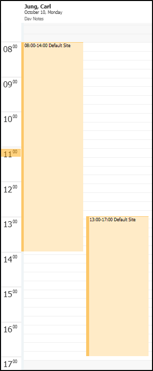
Given the above session configuration, consider the below scenarios and outcomes:
| Action | Outcome on Session 1 | Outcome on Session 2 |
GP Consultation is booked into the morning session between 08:00 - 13:00 (time where sessions do not overlap) |
(entire duration of the morning session) |
( 13:00 - 14:00 slots on Session 2 are blocked by Session 1 limit) |
| Action | Outcome on Session 1 | Outcome on Session 2 |
GP Consultation is booked into the morning session between 13:00 - 14:00 (time where sessions overlap) |
(entire duration of the morning session) |
(entire duration of the afternoon session) |
It is also possible to have blocks within "larger" sessions blocked by limits reached in "smaller" sessions where both overlap. If one "larger" session was configured from 08:00 - 17:00 and another "smaller" session from 11:00 - 13:00 for the same user, site and location, and the "smaller" session reached its booking limit, then the available slots would fall around this blocked session, meaning the respective appointment type appointment could be booked between 08:00 - 11:00 and between 13:00 - 17:00 but not between 11:00 - 13:00.
Meddbase Report Query Builder feature allows querying data on Booking Limits.
You can find a Root Table called Site Session Booking Limits that can be used to build a query, were:
*When building a report based on the Site Session root table, the Site Session Booking Limits and the Appointment Type tables can also be linked to aggregate information on booking limits on sessions
To start building a report on Site Session Booking Limits:
*The table below describes each column in the Site Session Booking Limits table and the data it returns:
| Column | Action/Information extracted |
| Id | The ID of a single reference to an appointment type in a Booking Limit |
| Group Id | The Id of the Group the Booking Limit belongs to |
| Row Id | The Id of the row within the group the Booking Limit belongs to |
| Count | The maximum number of bookings permitted for the Booking Limit row |
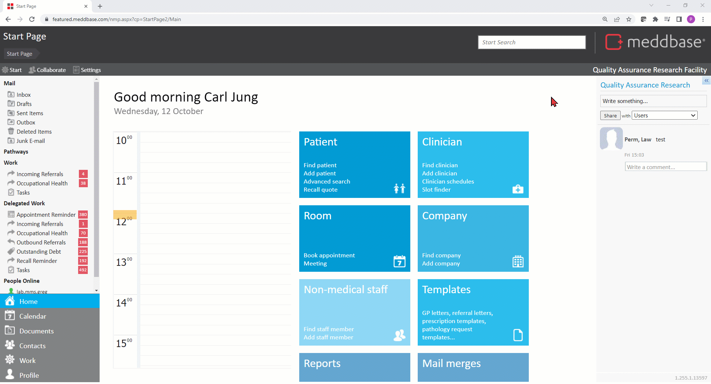